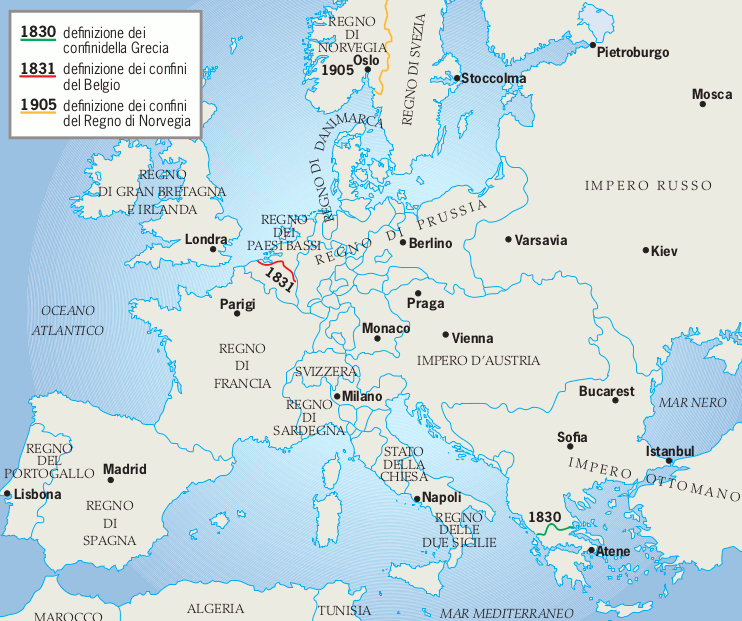

Congresso di Vienna
Dopo la sconfitta di Bonaparte, in tutti i Paesi prevaleva il desiderio di chiudere la parentesi delle riforme illuministiche e di tornare alla situazione politica e sociale precedente il grande terremoto rivoluzionario. In questo clima, dal 3 novembre 1814 al 9 giugno 1815 (con una breve interruzione in occasione della fuga di Napoleone dall’Elba e della campagna culminata nella disfatta di Waterloo), si tenne a Vienna una serie di riunioni che videro i ministri e i principi degli Stati più potenti d’Europa impegnati a discutere dell’assetto politico che il continente avrebbe dovuto assumere dopo vent’anni di continui cambiamenti violenti, provocati dalla Rivoluzione francese e dalle guerre napoleoniche. Naturalmente, i veri protagonisti del Congresso di Vienna furono le potenze che, coalizzate fra loro, avevano impedito a Bonaparte di diventare il padrone assoluto e incontrastato del continente: Inghilterra, Russia, Austria e Prussia. Molti dei congressisti, per la verità, non avevano alcuna voce in capitolo: le decisioni finali venivano prese solo dai rappresentanti delle grandi potenze. Fra costoro due soprattutto si distinguevano per autorità e prestigio: il principe austriaco Klemens von Metternich (1773-1859), ministro degli Esteri, rappresentante del Paese ospitante e presidente del Congresso, e lo zar di Russia Alessandro I, che aveva avuto un ruolo determinante nelle ultime alleanze antinapoleoniche.
La posizione della Francia di Talleyrand: il principio di legittimità
In una posizione assai delicata e particolare si trovava invece il rappresentante francese, il principe Charles Maurice di Talleyrand (1754-1838): la Francia era infatti accusata di aver sconvolto l’Europa prima con la Rivoluzione, poi con le guerre napoleoniche. Talleyrand, tuttavia, con la sua abilità diplomatica, riuscì a rovesciare la situazione. Si presentò infatti al congresso come rappresentante non di uno Stato nemico, ma del re Luigi XVIII, fratello di Luigi XVI, il sovrano che era stato ghigliottinato durante la Rivoluzione. Chiedeva dunque giustizia per il monarca francese, che doveva riacquistare il legittimo trono, e per il suo Paese, che doveva essere ricostituito nei suoi antichi confini. Fu lui a proporre uno dei criteri che il Congresso decise di seguire nella riorganizzazione dell’Europa: il cosiddetto principio di legittimità. Secondo tale impostazione, bisognava sforzarsi di ricostruire la situazione politica esistente prima dello scoppio della Rivoluzione francese, riportando sui troni i numerosi sovrani deposti da Napoleone e azzerando tutte le modifiche apportate ai confini dei vari Stati dagli eserciti rivoluzionari o imperiali.
Nel momento in cui formulò questo criterio, Talleyrand pensava all’interesse della Francia: in effetti, il principio di legittimità permise alla grande potenza sconfitta di non subire alcuna significativa mutilazione territoriale, rispetto all’assetto prerivoluzionario; la Francia perse sì tutti territori conquistati nel periodo di guerra, manon uscì dal Congresso di Vienna umiliata o schiacciata.
Il principio della sicurezza generale
Pur accettando, come criterio di massima e di riferimento, il ritorno al passato prebellico (al punto che l’epoca immediatamente seguente il Congresso di Vienna è stata denominata età della Restaurazione), le potenze vincitrici tentarono tuttavia, nello stesso tempo, di dare all’Europa un assetto più stabile e più sicuro, perché più bilanciato. Tale principio dell’equilibrio venne sostenuto soprattutto dall’Inghilterra, preoccupata che nessuno Stato assumesse, sul continente, un peso eccessivo, tale da poter imporre – al limite – la propria incontrastata egemonia. In primo luogo, il Congresso si premurò di rafforzare alcuni Stati confinanti con la Francia, al fine di prevenire un eventuale rinnovato espansionismo del Paese di Napoleone.
Il Belgio, pertanto, venne posto sotto la sovranità olandese. L’unione del Belgio e dell’Olanda nel Regno dei Paesi Bassi creò uno Stato cuscinetto intorno alla Francia.
Al Regno di Sardegna furono aggiunte la Savoia e la Repubblica di Genova.
Alla Prussia, invece, furono date un’ampia porzione della Sassonia e una buona parte di territori nella regione del Reno, al confine con la Francia.
La Gran Bretagna mantenne le colonie conquistate nelle guerre francesi, acquistò il Capo di Buona Speranza e l’isola di Ceylon dall’Olanda e si riservò alcuni presidi strategici sul mare, come Malta e le isole Ionie.
Il principio di equilibrio ebbe sempre il sopravvento sul principio di legittimità, tutte le volte in cui i due criteri entrarono in contrasto fra loro. Il caso più clamoroso di tale supremazia delle esigenze di bilanciamento delle forze fu la sorte della Repubblica di Venezia; poiché essa aveva perso l’indipendenza nel 1797, con il trattato di Campoformio, in base al principio di legittimità avrebbe dovuto ritornare a essere uno Stato libero e sovrano; invece, fu assegnata all’Austria. L’impero asburgico, in tal modo, guadagnò in compattezza e unità, rispetto al Settecento, quando la Lombardia era separata dal resto dei domini austriaci a causa della presenza, appunto, di Venezia. In compenso, nell’Europa orientale, la potenza che si rafforzò nella misura maggiore fu la Russia, che poté allargare il proprio dominio alla Finlandia e a gran parte della Polonia (Varsavia compresa). La Germania, che era un insieme di ben trentanove Stati quasi indipendenti, fu trasformata in una confederazione, cioè nell’unione politica di più Stati, sotto la presidenza austriaca.
La Santa Alleanza
All’interno degli Stati europei (con la sola eccezione dell’Inghilterra e della Francia) vigeva un rigido assolutismo, che non ammetteva alcuna forma di critica ai governi e non prevedeva alcuna limitazione al potere dei sovrani. Questi non avevano assolutamente dimenticato che la Rivoluzione francese era iniziata come moto liberale,finalizzato a ottenere dal re una costituzione che introducesse nel Paese il rispetto peri diritti del cittadino e la separazione dei poteri dello Stato, sul modello inglese. Agli occhi dello zar o del primo ministro austriaco (Klemens Lothar von Metternich), ogni innovazione politica che mettesse anche solo lontanamente in discussione il potere assoluto dei sovrani, considerato di origine divina, doveva essere represso sul nascere
Su queste basi, lo zar Alessandro propose un’alleanza militare permanente tra Austria, Russia e Prussia cui aderì successivamente anche la Francia. Sulla base del principio di intervento, le tre nazioni si accordarono il 26 settembre 1815, per reprimere militarmente ogni eventuale moto rivoluzionario e per combattere chiunque mirasse ad abbattere i “sacri” princìpi dell’ordine e della legittimità. Tale coalizione, detta appunto Santa Alleanza, avrebbe dovuto inaugurare una nuova era di pace. È evidente, tuttavia, che vi erano interessi di ben altro tipo: primo fra tutti il desiderio di mantenere una posizione di potere e di prestigio in Europa.
Esiti del congresso di Vienna
È difficile dare una valutazione storica serena dell’operato del Congresso di Vienna. Da un lato, è innegabile che esso riuscì a costruire un sistema stabile , perché capace di comporre in modo ragionevole le esigenze delle varie potenze. Non a caso, non si verificarono in Europa guerre generali, o conflitti armati tra grandi potenze, in tutto il periodo che intercorse tra la sconfitta di Napoleone e la guerra di Crimea del 1854-1856. Anzi, a parte quest’ultima, non si ebbe, in tutto il periodo compreso tra il 1815 e il 1914, alcuna guerra nella quale fossero coinvolte più di due grandi potenze. Come ha scritto lo storico inglese E.J. Hobsbawm, «il cittadino del secolo XX può ben apprezzare tutta l’importanza di questo fatto. La nostra generazione, che in maniera tanto spettacolare si è rivelata incapace di assolvere il compito fondamentale della diplomazia internazionale, cioè quello di evitare le guerre mondiali, è perciò portata a considerare gli statisti e i metodi del 1815-48 con un rispetto che non sempre sentirono le generazioni immediatamente successive».
Restaurazione
Il termine restaurazione entrò nel linguaggio politico europeo dopo la prima rivoluzione inglese (1640-1660) in quanto fu adottato dai seguaci di Carlo II Stuart, che poté riprendere il trono strappato dalla Rivoluzione a suo padre (processato e ucciso nel 1649). L’uso della parola restaurazione voleva segnalare che, dopo vent’anni di caos e di anarchia, tornava finalmente l’ordine, mentre l’autorità del re d’Inghilterra tornava assoluta, o comunque superiore a quella del Parlamento. In realtà, nel 1688-1689, una seconda rivoluzione pose fine all’assolutismo in Inghilterra. Viste a distanza di tempo, una rivolta e una rivoluzione si distinguono proprio da questo punto di vista: mentre una rivolta può essere sedata e la situazione precedente può essere oggetto di restaurazione, un’autentica rivoluzione (come quella inglese del 1640-1660 e comequella francese iniziata nel 1789) provoca uno sconvolgimento tale che un puro e semplice ritorno al passato non è assolutamente possibile
Charles-Maurice de Talleyrand
Fu uno dei pochi uomini politici del suo tempo che riuscì a svolgere sempre un ruolo di primo piano, malgrado i frequenti mutamenti di regime che subì la Francia nell’arco della sua vita (1754-1838). Talleyrand era un aristocratico: anzi, la sua famiglia era una delle più nobili casate del regno. Una grave infermità a una gamba, che lo rese zoppo, gli precluse la carriera militare e gli impose di fatto di scegliere quella ecclesiastica, pur senza vocazione. Del resto, il giovane Talleyrand apprezzava Voltaire e condivideva appieno le sue feroci critiche al clero e alla religione. Divenuto vescovo di Autun, partecipò agli Stati generali del 1789 in qualità di delegato del clero. Negli anni più violenti della Rivoluzione visse in Inghilterra e negli Stati Uniti, ma dal 1799 si mise a disposizione di Napoleone, che gli affidò l’incarico di ministro degli Esteri. A partire dal 1807, entrò in contatto con lo zar, conducendo, di fatto, un doppio gioco. Da quel momento, si assunse il compito di limitare i danni della sconfitta della Francia, che egli precocemente intuì come inevitabile, a causa dell’incapacità dimostrata da Bonaparte nel limitare la propria ambizione.
Klemens Lothar von Metternich
Nato a Coblenza nel 1773, Metternich diresse per circa quarant’anni (1809-1848) la politica estera austriaca. In epoca napoleonica, dopo le ripetute sconfitte subite dall’esercito austriaco, si rese conto della necessità di entrare in buone relazioni politiche con la Francia e promosse una politica di mediazione tra l’impero di Bonaparte e le altre potenze europee. Al Congresso di Vienna sostenne la necessità di costruire in Europa una situazione di equilibrio tale da garantire un lungo periodo di pace. Tale scelta, però, lo spinse a rifiutare ogni aspirazione all’indipendenza delle numerose nazionalità oppresse da dominazione straniera e a sostenere la necessità di bloccare sul nascere ogni tentativo di modificare l’ordine fissato a Vienna. Tale visione politica prese il nome di principio di intervento e si concretizzò nell’immediata repressione, da parte dell’esercito austriaco, dei moti rivoluzionari scoppiati in Italia nel 1820-1821 e nel 1830-1831. La rivoluzione che prese piede a Vienna nel 1848 provocò le sue dimissioni. Morì a Vienna nel 1859.
Il rinnovamento auspicato dalla borghesia
La Rivoluzione francese si era conclusa con il trionfo della borghesia. Ora, proprio questa classe di cittadini, consapevole delle conquiste ideali della Rivo-luzione e dei vantaggi della libertà (erano perciò detti “liberali”), si assunse il difficile compito di riprendere la lotta contro l’assolutismo.In particolare in Italia erano «liberali» gli studenti, i giornalisti, i letterati, i professionisti e tutti coloro che avevano combattuto nelle legioni napoleoniche e che avevano provato l’orgoglio di appartenere a un esercito, a un regno, a una bandiera, finalmente legati al nome d’Italia: furono appunto costoro, non rasse-gnati all’atmosfera oppressiva della Restaurazione, a iniziare la lotta per la libertà.